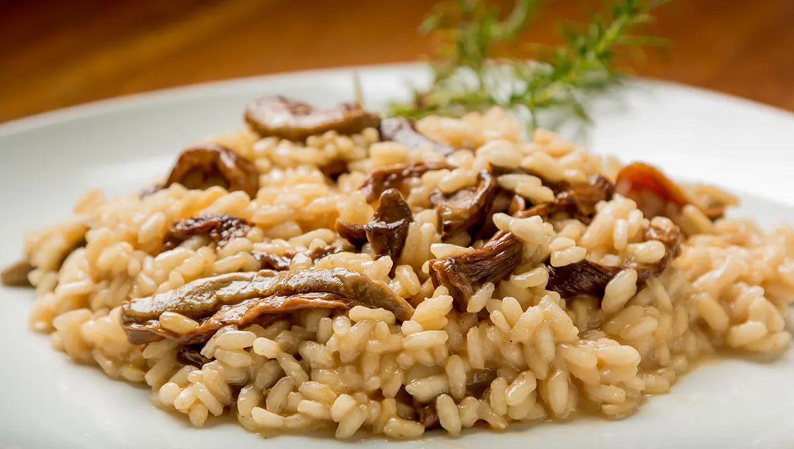

Risotto

What is gourmet risotto?
There are all kinds of tasty add-ins to risotto, and mushrooms are just one of them. Mushrooms add an earthy, savory flavor to risotto that makes it a good complement to main dishes like roast chicken, pork, or beef. You can serve mushroom risotto as a side dish, a main dish, or a starter to a multi-course Italian menu.
What is going to be used
- Broth:Homemade chicken broth is always the best choice for flavor, but you can use store-bought chicken broth for convenience. Choose low-sodium broth and adjust the seasonings at the end. Since you'll keep it hot on the stove while you're stirring it into the risotto, you can bump up the flavor of the broth by simmering it with scraps of shallots, chives, and mushroom stems left over from prepping the risotto ingredients. To make this vegetarian, substitute vegetable broth.
- Olive oil:For sautéing the mushrooms and shallots. You won't be cooking at high heat, so it's okay to use extra virgin olive oil.
- Mushrooms:This recipe uses a combination of portobello and white mushrooms.
- Shallots:If you don't have shallots, you can substitute finely chopped yellow onion.
- RiceTo get that signature creamy risotto texture, you must use a particular type of short-grain, high-starch rice like Arborio, Carnaroli, or Vialone Nano that releases its starch as you cook and stir. No other rice will give you the same results.
- Wine:The first liquid you add to the pan after you sauté the rice is a half cup of white wine — it will absorb into every grain and create an essential layer of flavor. Choose wisely. Go for a crisp, dry white wine like pinot grigio or sauvignon blanc. If you don't want to use wine, just start with the broth.
- Butter:A generous amount of butter at the end adds more creamy texture and rich flavor.
- Parmesan cheese: You've come this far. Don't shortchange the flavor of your risotto by using anything other than freshly grated Parmesan cheese.
- Chives:Chives cut through the richness and add visual appeal, too. If you don't have chives, fresh parsley is a good substitute.
Ingredients
- 6 cups chicken broth, or as needed
- 3 tablespoons olive oil, divided
- 1 pound portobello mushrooms, thinly sliced
- 1 pound white mushrooms, thinly sliced
- 2 medium shallots, diced
- 1 ½ cups Arborio rice
- ½ cup dry white wine
- 4 tablespoons butter
- 3 tablespoons finely chopped chives
- ⅓ cup freshly grated Parmesan cheese
- sea salt and freshly ground black pepper to taste
Steps
- Gather all ingredients.
- Warm broth in a saucepan over low heat. Meanwhile, warm 2 tablespoons olive oil in a large saucepan over medium-high heat. Add portobello and white mushrooms; cook and stir until soft, about 3 minutes. Remove mushrooms and their liquid to a bowl; set aside.
- Add remaining 1 tablespoon olive oil to the saucepan. Stir in shallots and cook for 1 minute. Add rice; cook and stir until rice is coated with oil and pale, golden in color, about 2 minutes.
- Pour in wine, stirring constantly until wine is fully absorbed. Add 1/2 cup warm broth to the rice, and stir until the broth is absorbed.
- Continue adding broth, 1/2 cup at a time, stirring constantly, until the liquid is absorbed and the rice is tender, yet firm to the bite, about 15 to 20 minutes.
- Remove from heat. Stir in reserved mushrooms and their liquid, butter, chives, and Parmesan cheese.
- Season with salt and pepper and serve immediately.
Back